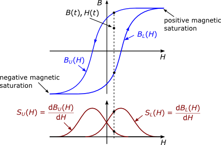
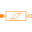

PartialGenericHysteresisTellinenPartial Tellinen hysteresis model |
Information
This information is part of the Modelica Standard Library maintained by the Modelica Association.
A reluctance with the Tellinen hysteresis model. The major hysteresis loop is defined by the hyperbolic tangent function.
The Tellinen Hysteresis Model
The Tellinen hysteresis model is a simple model to describe the magnetic hysteresis behavior of ferromagnetic materials. It only uses the rising (hystR) and falling (hystF) branch of the major hysteresis loop and their derivatives der(hystR) and der(hystF). See Fig. 1 and the following equations for a short description of the Tellinen hysteresis model.
diffHyst = hystF - hystR; dhR = hystF - b; dhF = b - hystR;
if the magnetic field intensity increases (der(h)>0)
der(b) = dhR/diffHyst * der(hystR);
if the magnetic field intensity decreases (der(h)<0)
der(b) = dhF/diffHyst * der(hystF);
 |
Parameters (8)
| l |
Value: 0.1 Type: Length (m) Description: Length in direction of flux |
|---|---|
| A |
Value: 1e-4 Type: Area (m²) Description: Area of cross section |
| V |
Value: A * l Type: Volume (m³) Description: Volume of FluxTube |
| useHeatPort |
Value: false Type: Boolean Description: =true, if HeatPort is enabled |
| T |
Value: 293.15 Type: Temperature (K) Description: Fixed device temperature if useHeatPort = false |
| includeEddyCurrents |
Value: false Type: Boolean Description: =true, if eddy current losses are enabled |
| sigma |
Value: 10e6 Type: Conductivity (S/m) Description: Conductivity of core material |
| d |
Value: 0.5e-3 Type: Length (m) Description: Thickness of lamination |
Outputs (8)
| H |
Type: MagneticFieldStrength (A/m) Description: Magnetic field strength |
|---|---|
| Hstat |
Type: MagneticFieldStrength (A/m) Description: Static (ferromagnetic) portion of the magnetic field strength |
| Heddy |
Type: MagneticFieldStrength (A/m) Description: Dynamic (eddy currents) portion of the magnetic field strength |
| B |
Type: MagneticFluxDensity (T) Description: Magnetic flux density |
| MagRel |
Type: Real Description: Relative magnetization at initialization (-1..1) |
| LossPowerStat |
Type: Power (W) Description: Ferromagnetic (static) hysteresis losses |
| LossPowerEddy |
Type: Power (W) Description: Eddy current losses (dynamic hysteresis losses) |
| asc |
Type: Boolean Description: True when der(Hstat)>0 |
Connectors (3)
| port_p |
Type: PositiveMagneticPort Description: Positive magnetic port |
|
|---|---|---|
| port_n |
Type: NegativeMagneticPort Description: Negative magnetic port |
|
| heatPort |
Type: HeatPort_a |
Extended by (5)
|
GenericHystTellinenPermanentMagnet Modelica.Magnetic.FluxTubes.Shapes.HysteresisAndMagnets Permanent magnet based on the Tellinen hysteresis model |
|
|
Modelica.Magnetic.FluxTubes.Shapes.HysteresisAndMagnets Generic flux tube with ferromagnetic hysteresis based on the Tellinen model and table data |
|
|
Modelica.Magnetic.FluxTubes.Shapes.HysteresisAndMagnets Generic flux tube with ferromagnetic hysteresis based on the Tellinen model and the Everett function [Ya89]) |
|
|  |
Modelica.Magnetic.FluxTubes.Shapes.HysteresisAndMagnets Generic flux tube with hard magnetic hysteresis based on the Tellinen model and simple tanh()-functions |
|
Modelica.Magnetic.FluxTubes.Shapes.HysteresisAndMagnets Generic flux tube with soft magnetic hysteresis based on the Tellinen model and simple tanh()-functions |